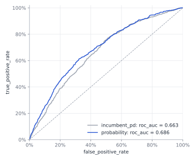
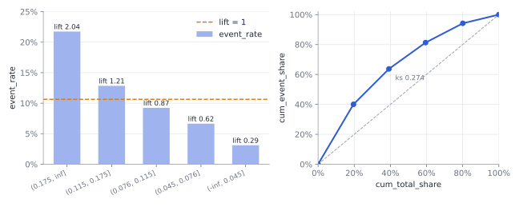

7. 模型评估#
模型是在 1 月至 9 月的申请上拟合的。本章衡量它对 10 月至 12 月未见过的获批申请人排序得如何，以及是否比供应商的 PD 排序得更好； 模型表现 定义了每个指标。
前面各章的代码
>>> import numpy as np
>>> import pandas as pd
>>> from kivi.datasets import make_applications
>>> from kivi.reject_inference import fuzzy_augmentation
>>> from kivi.selection import logistic_regression, stepwise
>>> from kivi.spec import fit_spec
>>> applications = make_applications(n_applicants=40000, rng=0)
>>> months = pd.period_range("2024-01", periods=12, freq="M")
>>> applications["month"] = months[np.arange(40000) * 12 // 40000]
>>> eligible = applications[~applications["policy_decline"]]
>>> accepts = eligible[eligible["approved"]]
>>> development = accepts[accepts["month"] <= "2024-09"]
>>> validation = accepts[accepts["month"] >= "2024-10"]
>>> rejects = eligible[~eligible["approved"] & (eligible["month"] <= "2024-09")]
>>> features = ["age", "income", "debt_to_income", "inquiries", "housing", "employment", "incumbent_pd"]
>>> method = {column: "monotonic" for column in ["age", "income", "debt_to_income", "incumbent_pd"]}
>>> method["employment"] = "chimerge"
>>> bins = {"inquiries": [-np.inf, 0, 1, 2, np.inf], "incumbent_pd": 8}
>>> spec = fit_spec(development[features], development["target"], method=method, bins=bins)
>>> selected = stepwise(spec.woe_transform(development), development["target"])
>>> accepts_model = logistic_regression(spec.woe_transform(development)[selected], development["target"])
>>> def predict(model, frame):
... slopes = model["coef"].drop("intercept")
... log_odds = model.loc["intercept", "coef"] + spec.woe_transform(frame)[slopes.index] @ slopes
... return 1 / (1 + np.exp(-log_odds))
>>> inferred = fuzzy_augmentation(predict(accepts_model, rejects), factor=1.5)
>>> frame = pd.concat([development[features], rejects.loc[inferred.index, features]])
>>> target = pd.concat([development["target"], inferred["target"]])
>>> weights = pd.concat([pd.Series(1.0, index=development.index), inferred["weight"]])
>>> model = logistic_regression(spec.woe_transform(frame)[selected], target, weights=weights)
衡量排序能力#
这些指标要求评分随风险升高而增大，因此 PD 直接传入即可。 roc_auc() 、 gini() 和 ks() 衡量它区分违约与未违约的能力， brier_score() 衡量 PD 与结果的接近程度：
>>> from kivi.metrics import brier_score, delong_test, gains_table, gini, ks, roc_auc
>>> from kivi.metrics import roc_auc_interval, roc_table
>>> probability = predict(model, validation)
>>> y = validation["target"]
>>> pd.Series(
... {
... "roc_auc": roc_auc(probability, y),
... "gini": gini(probability, y),
... "ks": ks(probability, y),
... "brier_score": brier_score(probability, y),
... }
... ).round(3)
roc_auc 0.686
gini 0.373
ks 0.290
brier_score 0.091
dtype: float64
6,785 笔申请、722 笔违约的样本对 AUC 的测量存在一定的不确定性。 roc_auc_interval() 给出 AUC 及 Gini 的 DeLong 标准误和 95% 置信区间：
>>> roc_auc_interval(probability, y).round(3)
estimate se lower upper
statistic
auc 0.686 0.01 0.666 0.706
gini 0.373 0.02 0.333 0.412
与供应商的 PD 比较#
验证样本是由供应商评分卡批准的，因此也有供应商的 PD。 delong_test() 在同一批申请人上比较两个 AUC，并考虑了两个评分之间的相关性：
>>> delong_test(validation["incumbent_pd"], probability, y).round(4)
current_auc 0.6632
new_auc 0.6863
difference 0.0231
se 0.0060
lower 0.0113
upper 0.0349
z 3.8435
p_value 0.0001
dtype: float64
新评分卡把 AUC 提高了 0.023，其 95% 区间为 0.011 到 0.035，因此这一提升并非偶然。 roc_table() 给出两条 ROC 曲线上的点：
>>> curves = {
... "incumbent_pd": roc_table(validation["incumbent_pd"], y),
... "probability": roc_table(probability, y),
... }

验证样本上的 ROC 曲线。新评分卡的曲线位于供应商曲线之上，在左侧风险最高的申请人中最为明显。#
模拟核对
验证样本只包含获批申请人。在 10 月至 12 月的全部合格申请人中，无论是否获批，新评分卡的排序也优于供应商的 PD：
>>> quarter = eligible[eligible["month"] >= "2024-10"]
>>> quarter_pd = predict(model, quarter)
>>> print(f"{gini(quarter_pd, quarter['target']):.3f} against {gini(quarter['incumbent_pd'], quarter['target']):.3f}")
0.444 against 0.424
按评分段分解排序#
gains_table() 显示违约在各评分段中的分布。评分段取开发样本 PD 的五分位，使两个样本按相同方式切分：
>>> from kivi.binning import bin_edges
>>> edges = bin_edges(predict(model, development), bins=5).round(3)
>>> gains = gains_table(probability, y, bins=edges)
>>> gains[["total", "event", "event_rate", "lift", "cum_event_share"]].round(3)
total event event_rate lift cum_event_share
bin
(0.175, inf] 1329 289 0.217 2.044 0.400
(0.115, 0.175] 1331 171 0.128 1.207 0.637
(0.076, 0.115] 1375 127 0.092 0.868 0.813
(0.045, 0.076] 1399 93 0.066 0.625 0.942
(-inf, 0.045] 1351 42 0.031 0.292 1.000

验证样本的五个 PD 段。风险最高的五分之一申请人集中了 40% 的违约。#
风险最高的评分段违约率为 21.7%，是平均水平的两倍，最安全的为 3%。验证样本各评分段与开发样本一样，各约占五分之一的申请人，说明模型的 PD 在两个时期之间没有偏移。